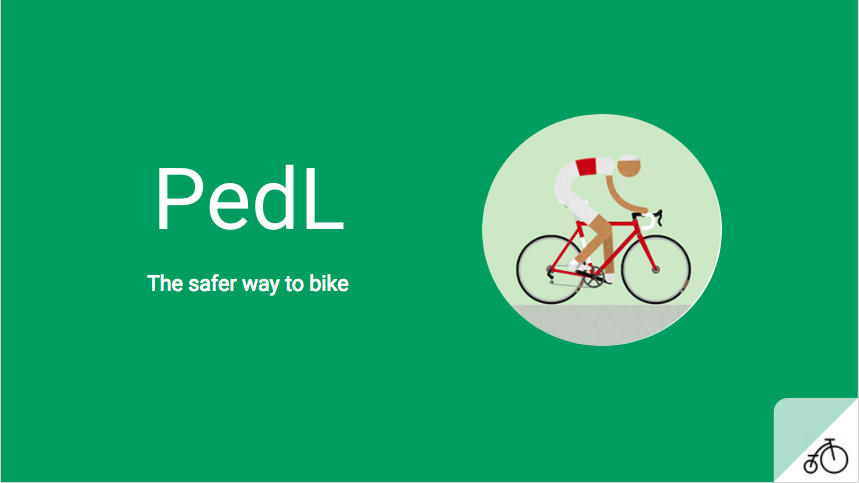
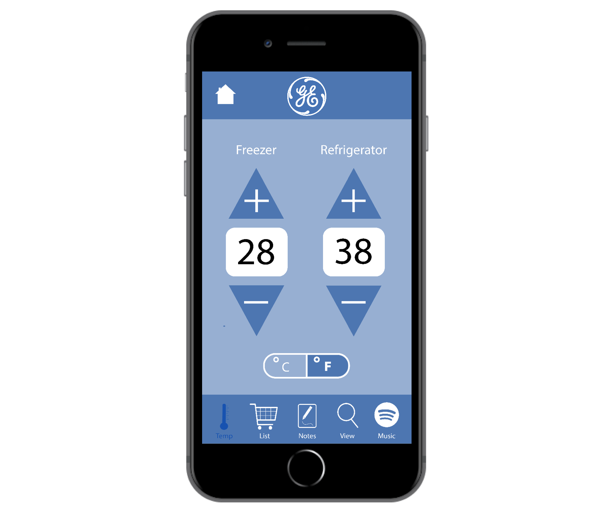

           <!--
           <li> <div class="subheading mb-5">PedL</div><p></p>For a class titled, "Entreprenuerial Business Planning", I led a team of three to design a user-friendly, bike routing phone application. What seperated this idea from the normal (GoogleMaps, Strava, etc.) is that the routes were crowdsourced and constantly changing to provide the safest and fastest routes for cyclists in the city. For a summary of the project, <a href="https://docs.google.com/presentation/d/1LwnCq3BqLgdJ6taXZOGwSOWHVrkaFI_PFFd6fB-UVm8/edit?usp=sharing">click here</a>.<p></p></li> -->

                     
         <!-- <li><div class="subheading mb-3">Boston Marathon Tracking App</div> <a href="https://rbiette.github.io/MarathonProto.pptx">  </a>
            <p>In anticipation of the 2018 Boston Marathon, I designed a mobile app for the iPad. This project features heavy branding, with a subtle contemporary feel. This app is aimed at spectators who may be tracking just one runner or a team of runners perhaps from their workplace. To interact with the prototype <a href="img/MarathonProto.pptx"> click here</a> </p> 
            </li>-->

           <!--<li><div class="subheading mb-3">General Electric Consulting Exercise</div><p></p>This project was to create the conceptual start to a smart refrigerator connected application. The design draws upon GE's clean lines and modern feel that was desired. A simple, crisp color scheme and typography choice was chosen. To learn more about the usability of the application interface, <a href="GEwriteup.pdf"> read the full report here</a><p></p></li>-->